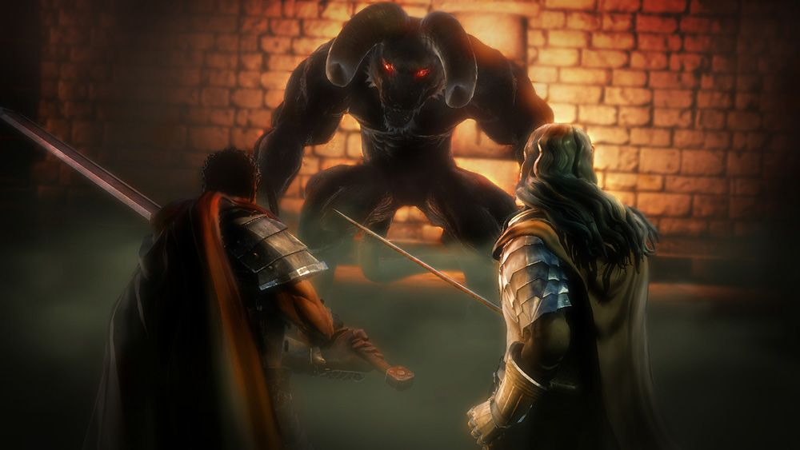

História
Como uma criança de nascimento plebeia, destinado a governar algum dia um reino próprio, recebendo o Behelit vermelho, Griffith criou o Bando do Falcão com um mineiro chamado Pippin, um ex-bandido chamado Corkus, um acrobata chamado Judeau, e uma garota de 12 anos chamada Caska.


Uma vez que o Bando dos Falcões derrotaram os Cavaleiros Ovelha Negra da Lança de Ferro de Tudor, eles foram recrutados por Midland para sua guerra contra Tuder. Durante um cerco, Guts e Griffith encontram o demônio Nosferatu Zodd, o Imortal, o qual nota o Behelit de Griffith e enigmaticamente adverte Guts do seu significado em sua condenação.